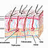

OncoGuía - Tipos de cáncer
-
 Adenoma de HipófisisGlándula situada en la silla turca
Adenoma de HipófisisGlándula situada en la silla turca -
 ColonLa última porción del aparato digestivo
ColonLa última porción del aparato digestivo -
 Cuello Uterino/Cérvixparte más inferior del aparato rep. femenino
Cuello Uterino/Cérvixparte más inferior del aparato rep. femenino -
 Endometrio/úteroórgano hueco, situado en la pelvis.
Endometrio/úteroórgano hueco, situado en la pelvis. -
 Esófagotubo hueco que transporta los alimentos
Esófagotubo hueco que transporta los alimentos -
 Estómagositúado en la parte alta del abdomen
Estómagositúado en la parte alta del abdomen -
 GliomasSe produce en el cerebro o en la médula espinal
GliomasSe produce en el cerebro o en la médula espinal -
 MamaGlándula destinada a la producción de leche
MamaGlándula destinada a la producción de leche -

MelanomaCrecimiento de los melanocitos
-
 MeningiomasTumor cerebral usualmente benigno
MeningiomasTumor cerebral usualmente benigno -
 No MelanomaEl tumor más frecuente del ser humano
No MelanomaEl tumor más frecuente del ser humano -
 PáncreasGlándula que participa en el proceso de la digestión
PáncreasGlándula que participa en el proceso de la digestión -
 PróstataGlándula sexual exclusiva de los varones
PróstataGlándula sexual exclusiva de los varones -
 RectoLa última porción del aparato digestivo
RectoLa última porción del aparato digestivo -
 Vejigaórgano situado en la parte baja de la pelvis
Vejigaórgano situado en la parte baja de la pelvis
Cáncer de mama
Introducción
La mama es una glándula destinada a la producción de leche para la alimentación del recién nacido tras el parto. Está constituida por gran cantidad de lóbulos y lobulillos (donde se produce la leche tras el parto), de donde salen una serie de tubos denominados ductos o conductos galactóforos que conducen la leche hacia el pezón.
Las mamas se desarrollan durante la pubertad y varían ligeramente a lo largo de los ciclos menstruales, durante la edad adulta, por efecto de los estrógenos y de la progesterona (hormonas femeninas). Tras la menopausia, la glándula mamaria involuciona, se atrofia y el tejido glandular es sustituido por grasa.
La mama contiene vasos sanguíneos y vasos linfáticos, estos últimos son los encargados de recoger la linfa. Confluyen en pequeñas formaciones redondeadas, denominadas ganglios linfáticos o adenopatías, que se encuentran en la axila y a ambos lados del esternón (cadena mamaria interna).
Existen dos tipos de cáncer de mama, el Carcinoma ductal es el más frecuente (representa el 80% de todos los cánceres de mama) y el Carcinoma lobulillar con una incidencia del 10% aproximadamente
Otros tipos de cáncer de mama menos frecuentes son el medular, el coloide y el tubular.
En España se diagnostican todos los años unos 22.000 casos nuevos, la mayoría se diagnostica entre los 35 y los 80 años. Representa aproximadamente el 30% de todos los tumores del sexo femenino.
Prevención
Aunque el cáncer de mama no se puede prevenir, sí es posible reducir el riesgo de padecerlo con una vida saludable: es importante hacer ejercicio físico de manera regular, llevar una dieta sana y equilibrada, evitar el alcohol y el consumo de tabaco.
Estudios epidemiológicos han demostrado que el sedentarismo y la obesidad favorecen la aparición de cáncer de mama e incrementan el riesgo de recidiva. También se conoce que el empleo de tratamiento hormonal sustitutivo tras la menopausia incrementa el riesgo de desarrollar este tumor.
Ante la sospecha de un cáncer de mama familiar o hereditario, el oncólogo puede solicitar consulta en una Unidad de Consejo Genético, y valorar la necesidad de realizar quimioprevención o mastectomía profiláctica en el caso de presentar alteración en los genes BRAC1 y BRAC2.
Diagnóstico Precoz
El cáncer de mama se puede diagnosticar precozmente mediante una prueba muy sencilla: la mamografía (ver más adelante).
En las últimas décadas se ha observado una reducción importante en la mortalidad por cáncer de mama, debido a las campañas de diagnóstico precoz (screening) que permiten detectar, mediante mamografía, el cáncer de mama en su etapa más inicial (antes de que sea palpable) y aumentar las posibilidades de curación.
Así, en fase precoz, los tratamientos son menos agresivos, con menos secuelas para la mujer y mayores posibilidades de curación.
En la actualidad se desaconseja la autoexploración de las mamas, como método de diagnóstico precoz, debido a su falta total de fiabilidad, ya que con este método cuando un nódulo se hace palpable es por que, al menos mide 1 cm.
Síntomas y Diagnóstico Clínico
En las fases más iniciales de la enfermedad, el cáncer de mama no produce ningún síntoma y se suele diagnosticar gracias a la mamografía que se debe realizar toda mujer, de forma periódica, en un programa de screening.
Los síntomas más frecuentes por los que la mujer acude al médico son:
- Aparición de un nódulo que previamente no existía.
- Irregularidades en el contorno de la mama.
- Dolor o cambio de tamaño.
- Alteración en la piel de la mama: aparición de úlceras, cambios de color, edema y aparición de piel de naranja (por su aspecto similar a la piel de dicha fruta).
- Retracción del pezón (hundimiento).
- Aparición de un nódulo en la axila (adenopatía).
Otros síntomas como el cansancio o dolor óseo localizado pueden aparecer en fases más avanzadas de la enfermedad.
Ante estos síntomas, la primera prueba diagnóstica debe ser la mamografía, ya que es la exploración más eficaz para detectar precozmente los tumores malignos de mama. Consiste en la realización de una radiografía especial de las mamas con un aparato de rayos X (mamógrafo). En general es una prueba sencilla y no dolorosa.
En el caso de lesiones sospechosas en la mamografía, es preciso completar el estudio con otras pruebas de imagen (Ecografía o Resonancia Magnética) o bien tomando una pequeña muestra de células o de tejido (punción o biopsia).
Ecografía: Exploración por ultrasonidos. Es una prueba sencilla e indolora que se realiza en unos minutos. Su papel es importante a la hora de diferenciar los nódulos con contenido líquido (quistes frecuentemente benignos) de masas sólidas (que generalmente suelen ser malignas).
Resonancia Magnética (RM): Está basada en la emisión de radiofrecuencias en un campo magnético. Se utiliza para conocer la morfología de la lesión y, fundamentalmente, para valorar si dicha lesión es única o por el contrario existen varios focos.
Todas las pruebas de imagen citadas permiten sospechar la existencia de un tumor. Sin embargo, para confirmar o descartar la existencia del mismo, es necesario realizar una punción y/o una biopsia de la lesión
Fases del tumor
Con el fin de determinar el tratamiento más adecuado para el cáncer de mama, es importante conocer la extensión de tumor. Dependiendo de si el tumor está confinado a la mama, invade estructuras vecinas u órganos a distancia, el tumor se clasifica en diferentes estadios:
- Estadio 0: son lesiones premalignas. También se denomina carcinoma in situ (Tis). Las células tumorales están localizadas exclusivamente en la pared de los lobulillos o de los conductos galactóforos.
- Estadio I: el tamaño del tumor es igual o inferior a dos centímetros. No hay afectación de ganglios linfáticos ni metástasis en órganos a distancia.
- Estadio II: El tumor mide entre 2 y 5 centímetros, con o sin afectación de ganglios axilares.
Se subdivide en:
- Estadio IIA: tumor de menos de 5 cm de diámetro, con ganglios axilares infiltrados por tumor
- Estadio IIB: tumor con diámetro entre 2 y 5 cm y afectación tumoral de los ganglios de la axila o tumor de más de 5 cm sin afectación de los ganglios axilares.
- Estadio III: El tumor afecta a ganglios axilares, ganglios supraclaviculares o a los ganglios de la mamaria interna y/o piel y pared torácica (músculos o costillas). Se subdivide en estadio IIIA, estadio IIIB y estadio IIIC.
- Estadio IV: Independientemente del tamaño tumoral y de la afectación de los ganglios regionales, el cáncer se ha diseminado, afectando a otros órganos como hueso o hígado (cualquier T, cualquier N, M1).
Clasificación biológica del cáncer de mama
En la actualidad no sólo se debe tener en cuenta la clasificación por estadios para determinar el tratamiento más adecuado, si no que además es fundamental conocer la biología de la célula tumoral del cáncer de mama.
En función de la presencia de receptores hormonales en la célula tumoral, así como de la presencia o no de la proteína HER2, se pueden considerar los siguientes grupos o tipos de cáncer de mama:
- Receptores hormonales positivos
Son tumores con receptores hormonales positivos para estrógenos y progesterona, los llamados también hormonodependientes. En general suelen ser tumores sin proteína HER2 sobreexpresada.
Suponen el 66% de todos los cánceres de mama y son más característicos de las mujeres postmenopáusicas. El tratamiento más idóneo es la hormonoterapia. Son los tumores de buen pronóstico.
- HER2 positivos
La célula tumoral posee la proteína HER2 sobreexpresada y carece de receptores hormonales. Supone aproximadamente el 25% de los cánceres de mama.
En la actualidad existe tratamiento específico con anticuerpos monoclonales dirigidos contra la proteína HER2, como el Trastuzumab. Este tratamiento ha supuesto una mejora importante en el pronóstico de este grupo de pacientes.
- Triple negativos
La célula tumoral no posee receptores para hormonas (estrógenos o progesterona) ni tiene sobreexpresión de la proteína HER2. Suponen, aproximadamente, el 15% de todos los cánceres de mama. La única opción terapéutica conocida hasta ahora es la quimioterapia.
- Positivos para receptores y para HER2
La célula tumoral posee receptores hormonales pero también sobreexpresa la proteína HER2. Suponen un 12% de los cánceres de mama. Se emplea el tratamiento hormonal así como anticuerpos monoclonales contra el HER2, además de quimioterapia.
Tratamiento